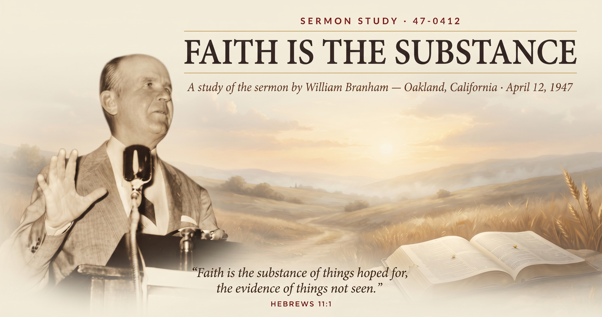

William Branham · Oakland Municipal Auditorium, Oakland, California · April 12, 1947 · Text: Hebrews 11:1–3

By April of 1947, William Branham had been preaching healing campaigns for only a matter of months, yet he was already living the exhausting rhythm that would define the next two decades of his ministry: a different city every night or two, packed auditoriums, and barely enough sleep between meetings to keep driving to the next one. This sermon opens with him admitting exactly that — he'd just come off nearly six months of near-continuous travel, was separated from his wife and children, and was, by his own account, running on almost nothing. It's worth sitting with that context before getting into the content, because the sermon itself is partly an answer to a very practical problem: how do you get an auditorium full of strangers, most of whom you'll never see again, to actually receive what they came for in the one night you have with them?
His answer is this sermon. And it centers on a single claim: that faith is not a feeling, a mood, or something you talk yourself into — it's a distinct, direct kind of knowing, as real and as verifiable as any of the five physical senses.
Now faith is the substance of things hoped for, the evidence of things not seen.
For by it the elders obtained a good report.
Through faith we understand that the worlds were framed by the word of God, so that things which are seen were not made of things which do appear.
— Hebrews 11:1–3, KJV
Branham's central move in this sermon is a piece of everyday logic he returns to again and again: the human body runs on five senses — sight, hearing, touch, smell, and taste — and each one gives you direct, positive knowledge of something you can't verify by the other four. You know something is orange juice because you tasted it, not because you saw, heard, felt, or smelled it. You know a woman is standing in front of you because you see her, even with your eyes closed a moment later you might still know she's there because you felt her hand. Each sense, on its own, is enough.
His claim is that faith works the same way, except it operates independently of all five. It isn't a feeling you manufacture by getting worked up, and it isn't wishful thinking dressed up in religious language. It's a sixth channel of direct knowledge, and like the other five, either you have the evidence or you don't. That's the weight he puts on the word "substance" in Hebrews 11:1 — not a hope you're leaning on, but something you actually possess.
To make the distinction concrete, Branham tells two stories from his own ministry. In the first, a teenage girl is hours from a burst appendix and insists to him that she believes she'll be healed. He presses her: if her faith is as total as she claims, she should be able to set a small bracelet hanging nearby swinging back and forth just by believing it will. When she can't — and initially recoils from the whole idea — he uses the moment to show her the difference between hope (what she'd been calling faith) and the real thing. It's a startling illustration by modern standards, but his point isn't about bracelets; it's that people routinely mistake sincere hoping for the "substance" Hebrews describes, and the two are not the same thing.
The second story is the emotional center of the sermon: a young woman named Edith Wright, dying of a ruptured appendix too far from a hospital to survive the drive, who moves from that same borrowed, hopeful "I believe" to something Branham describes as a settled, immovable confidence just before he prays for her. She recovers fully. Whatever one makes of the healing claim itself, the narrative device is doing real theological work — showing a visible before-and-after in a person's inner posture, not just recounting an outcome.
The sermon's back half turns to its actual text focus — the phrase "God testifying of his gifts" from Hebrews 11:4 — and traces a pattern through Scripture: Abel, Moses, Elijah, Peter, and ultimately Christ, each one sent by God, and each one initially unrecognized or resisted by the very people they were sent to. Moses is doubted by the Israelites he came to deliver. Elijah is rejected by the queen whose household he pastors. The recurring line is that people keep looking at the man and missing that it was God working through the man.
Branham doesn't say this subtly. He's building a direct case for his own healing ministry as the next link in that same chain — a gift he says was given to him by angelic commission, that people will either recognize or, like the crowds around Moses, fail to. Whatever a reader makes of that claim personally, it's the theological hinge the whole sermon turns on: the five-senses argument about faith isn't really about bracelets or orange juice at all. It's laying groundwork for why the audience should trust him specifically, that night, with their healing.
Buried in the sermon's personal anecdotes is a brief, striking moment from a meeting in Camden, Arkansas, where Branham recounts being stopped for taking the hand of a Black man in a crowd — something he notes could have gotten him jailed under the segregation laws of the place and era. He states plainly that he didn't consider it right, and goes on to pray for the man regardless. It's a small aside in a ninety-minute sermon, but it's a real historical window into both the constraints Branham was preaching under in the Jim Crow South and where he personally stood against them.
"Faith is more than sight, faith is more than feeling — it's the one sense that doesn't need the other five to know."
— a paraphrase of Branham's central claim in this sermon, suitable for sharing
Source: Faith Is The Substance, preached April 12, 1947, Oakland Municipal Auditorium, Oakland, California. Text © Voice Of God Recordings. This study is a paraphrase and personal commentary, not a reproduction of the sermon.
← Back to Sermon Studies